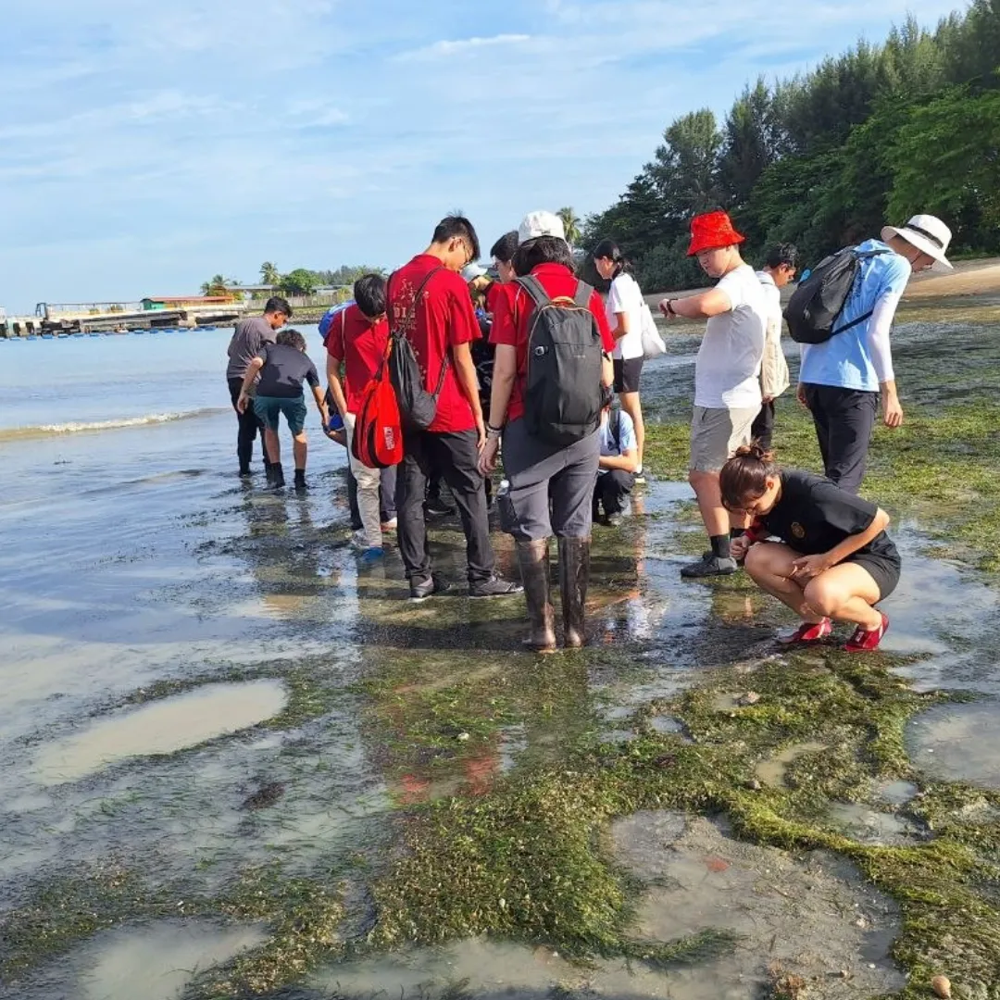

Growth
Support learning, confidence and participation through meaningful experiences with nature.
Second Nature began as a small ground-up effort to bring people back into contact with the living world.
It began with a simple thought: nature should feel accessible to everyone, regardless of age or background.
Our ground-up initiative, Reconnect with Nature, started in April 2024. As we received more funding support in April and June 2025, we were able to bring our activities to more people and develop programmes across learning, wellbeing and community participation.
In March 2026, we adopted the name Second Nature, reflecting a broader commitment to making everyday connections with the natural world feel familiar, welcoming and meaningful.
Today, we have reached more than 2,600 participants. Based on pre- and post-programme evaluations, 83% reported feeling more positive and 89.2% reported feeling less stressed after a session.

Drawing from the values used across our related community work, we focus on learning, openness, responsibility and care.
Support learning, confidence and participation through meaningful experiences with nature.
Stay curious, welcome different needs and consider feedback when planning activities.
Take responsibility for programme choices, participant support and our impact on green spaces.
Consider participant wellbeing, plant safety, environmental care and each person's right to opt out.
Reconnect with Nature starts as a community-led effort.
New support helps broaden programme delivery.
Additional funding supports the next phase.
Our work continues under Second Nature.
We work across age groups and settings, including early childhood, schools, youth, working adults, families and seniors. Programmes may be adapted for participants with additional access or support needs, subject to a suitability review.
Depending on the group, a session may focus on science learning, social interaction, sensory engagement, practical tasks, personal reflection or simply creating an enjoyable connection with green spaces.
Play, questions, guided observations and nature-based science.
Attention, connection, outdoor participation and shared activity.
Accessible sensory engagement, gardening and meaningful tasks.
Intergenerational activities and shared care for nature and place.
Meet the team supporting our nature-centred work.
Share your objectives and participant needs. We will work with you to plan a suitable programme.